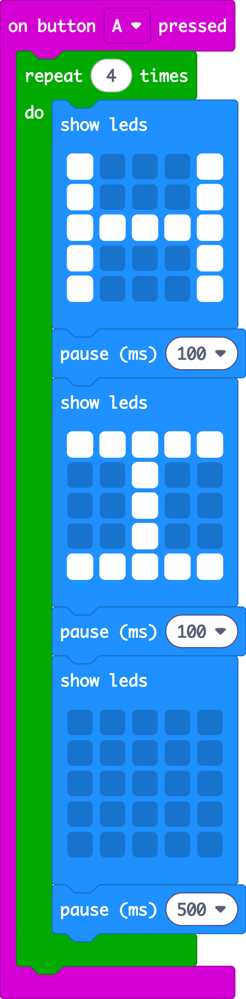
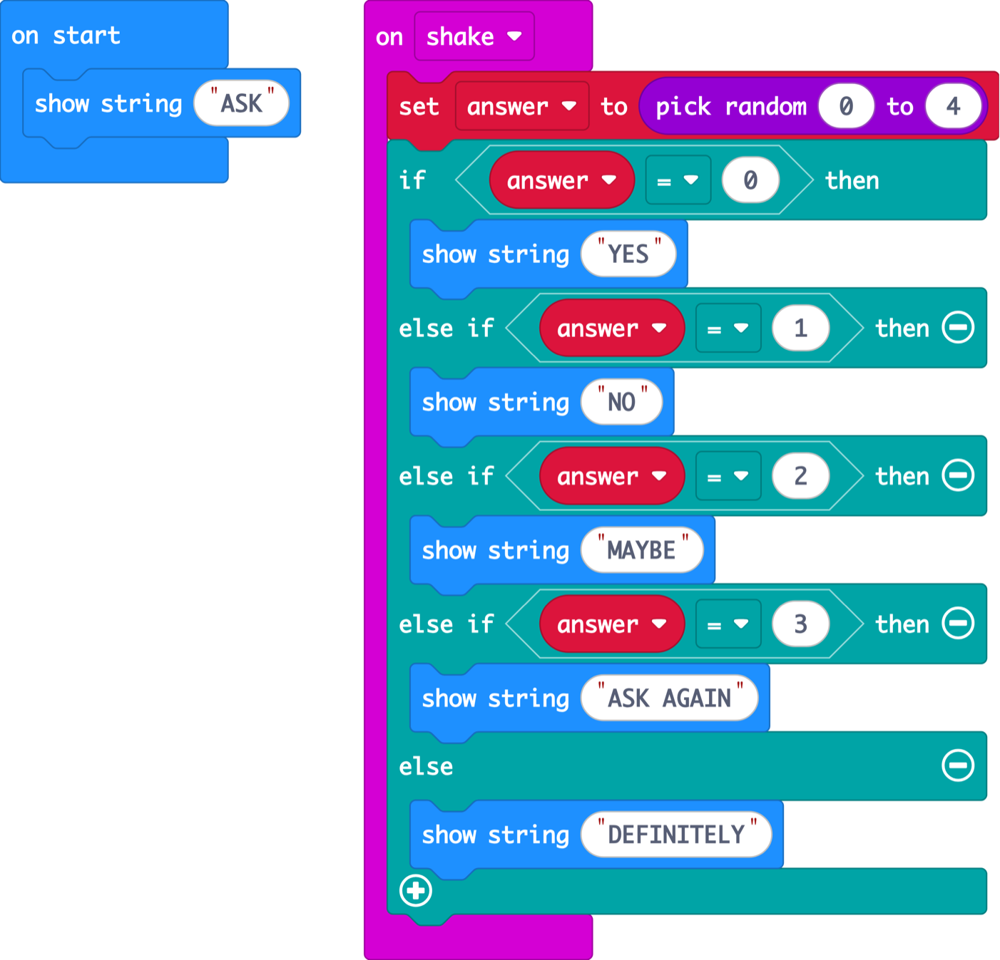
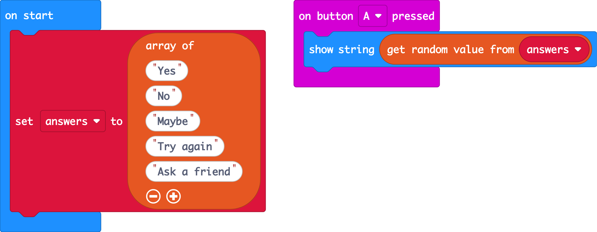
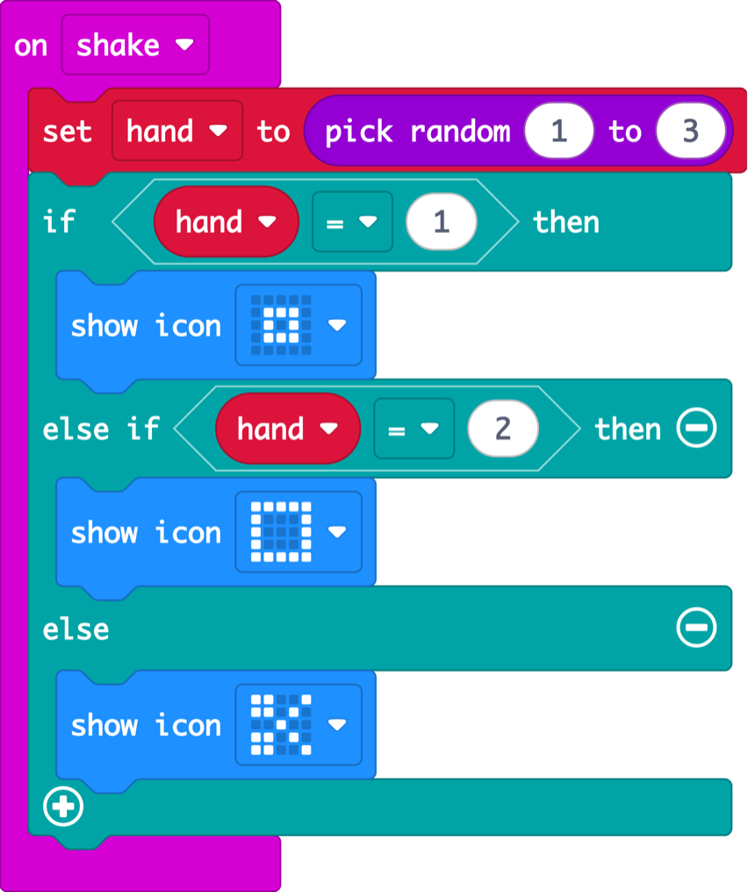
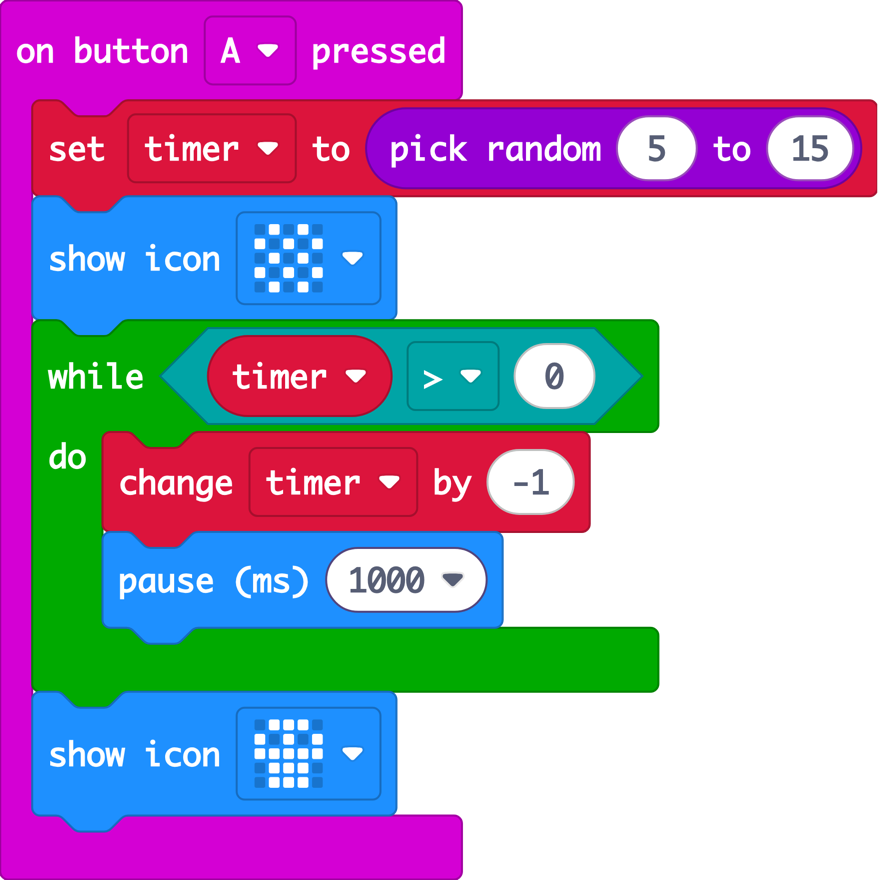
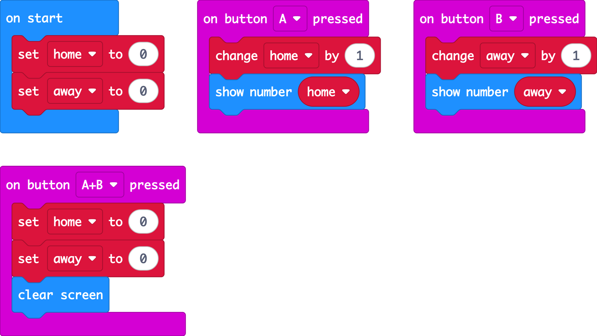
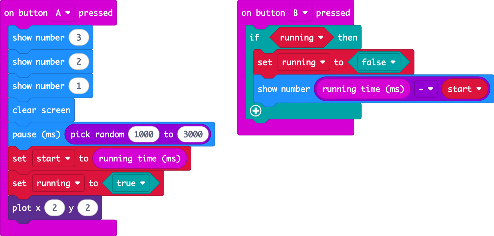
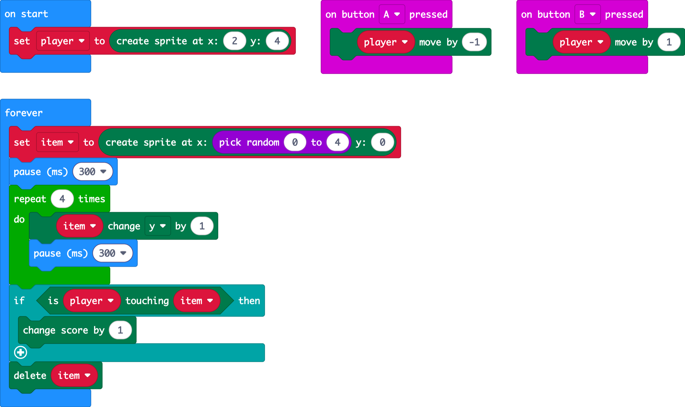
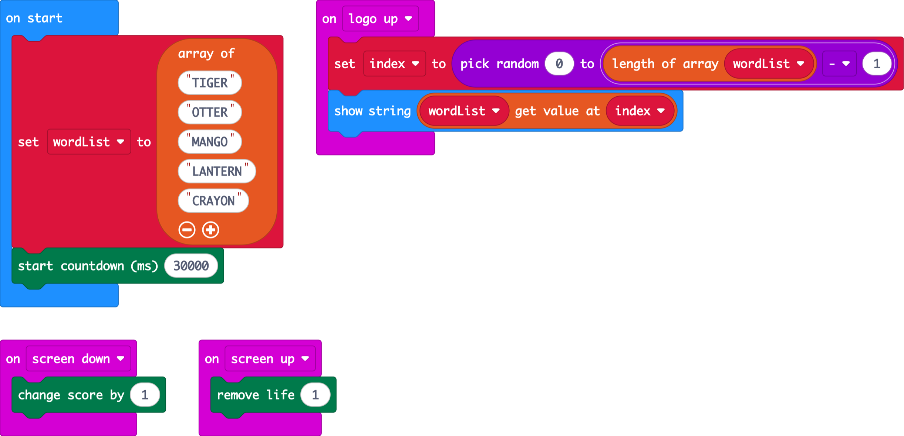
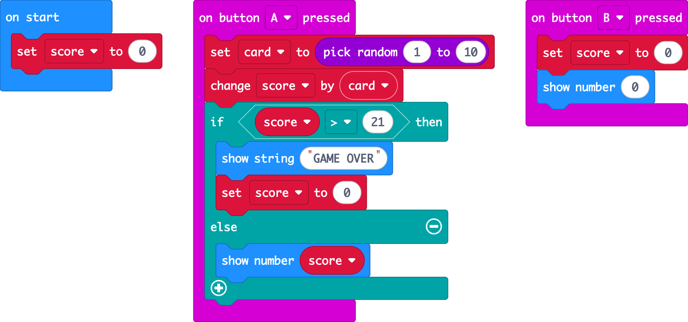

micro:bit with MakeCode
Every lesson so far with the micro:bit, in order, followed by nine games to build. Open one to see what you need, the steps, the blocks and something to try next. All of the building happens at makecode.microbit.org.
1Hello, MakeCodeYour first program: a name badge that plays when you press a button.
You need
- micro:bit
- USB cable
- A laptop with makecode.microbit.org open
Steps
- Open makecode.microbit.org, choose New Project and name it
name-badge. - Drag show leds inside on start. Click each LED you want lit to draw your first letter.
- Plug in the USB cable and press the purple Download button. If a file lands in Downloads, drag it onto the MICROBIT drive. Your letter appears on the board.
- Add one show leds for each letter of your name, with pause (ms) 100 after each. Finish with a blank show leds and pause (ms) 500. That is the gap before the name starts again.
- Wrap all of it in repeat 4 times. A repeat block is a loop: it runs the same blocks again and again.
- Move everything out of on start and into on button A pressed.
- Press Share, then Publish project, and copy the link. Publishing is how you hand work in.
The blocks


What happens
Press A and your name plays across the LEDs four times, with a short gap between each run.
The idea. The button is the input, the loop is the process and the LEDs are the output.
Now change it
- Make on button B pressed do something different.
- Make the pauses smaller and smaller. Find the fastest speed you can still read.
- Try show string with your name in it. Work out what it is doing for you.
Documents
2Algorithms 1: making the micro:bit decideEvents, a variable and a condition: show a heart on the fourth press of B.
You need
- micro:bit
- USB cable
- Battery pack
Steps
- Show a happy face when you shake the micro:bit: on shake with show icon inside.
- Show a sad face when you press A: on button A pressed with show icon inside.
- Now the challenge: show a heart when B has been pressed four times. The micro:bit has to remember how many presses there have been, then ask a question about that number.
- In the Variables drawer choose Make a Variable and call it
B Clicks. A variable is a box with a name on it. In on start, put set B Clicks to 0. - Start a new stack: on button B pressed with change B Clicks by 1 inside. Every press adds one to the box.
- Under that, add if … then from the Logic drawer and drop B Clicks = 4 into its gap. This is a condition: a question with only two answers, yes or no.
- Inside the if, show the heart, pause, clear the screen and set B Clicks to 0. Setting it back to 0 lets the count start again.
The blocks


What happens
Three presses of B show nothing. The fourth shows a heart for one second. Four more presses show it again.
The idea. Remembering needs a variable. Checking needs a condition.
Now change it
- Change the 4 to another number and test it.
- Show a different icon on the fourth press.
- Build the Shake Counter: a variable called
Shakesthat goes up by 1 on every shake, and an icon on the third shake.
Documents
3Choosing your gameThe Mini Project begins: pick one game from the Games Menu.
You need
- The Games Menu
- The Criteria A and B sheet
Steps
- Read through the Games Menu. It holds 23 micro:bit games in three levels.
- Pick two games you like and one you will build. For each, write down one strength and one weakness.
- Read the Criteria A and B sheet. It lists the eight pieces of design work you hand in, one for each strand.
- Tell Mr. Rawson which game you have chosen.
What happens
You leave with one game chosen and a reason for choosing it.
Documents
4My Game Design: the design packetSummative A and B. Explain your game and exactly how it works, on paper.
You need
- My Game Design packet
- The Games Menu
- A pencil
Steps
- Work through the eight parts of the packet in order. Each part is labelled with the strand it earns.
- In Part 1, name a real person your game is for.
- Write success criteria that you can see or count, such as the score goes up by 1 for each catch.
- Plan three versions of one game, each using A, B, A+B and shake in a different way.
- Fill in the controls table for your final version. Write not used beside any input your game leaves out.
- Draw your four 5 × 5 screens and write out one round of the game step by step.
What happens
A finished packet that another person could build your game from.
The idea. The packet is marked on how clearly it explains your plan.
Documents
5Building your gameTurn the design packet into a working game in MakeCode.
You need
- Your finished design packet
- micro:bit
- USB cable
Steps
- Open your packet at the controls table and the block list. They are your plan.
- Build one input at a time. Start with button A, download, and test it on the micro:bit.
- Add the next input and test again. Small steps keep the game working the whole way through.
- Most games keep a score or pick something at random. The two patterns below do those jobs.
- Press Share, then Publish project, and post the link in the Google Classroom build thread.
The blocks


What happens
Your game runs on a real micro:bit, and its link is in the build thread.
Now change it
- Add a sound or an icon for winning.
- Add a way to start a new game without unplugging the micro:bit.
6Carousel Play DayPlay each other's games and tell the builder what you noticed.
You need
- micro:bit
- Your game's sharing link
Steps
- Open your own game from its sharing link and download it to your micro:bit.
- Move round the room when Mr. Rawson calls. Play each game you reach.
- Tell the builder the first thing you did when you picked their game up.
- Back at your own game, read what your players noticed and make one change.
- If your game changed, publish it again and post the new link.
What happens
Your game has been played by people who did not build it, and you have one idea to borrow from someone else's.
Nine games like the ones Year 8 built for the Mini Project. Each one explains how the game works, then gives the basic steps. Build one, then make it your own.
1Magic 8 BallAsk a question, shake, and read your answer.
How the game works
You ask a yes-or-no question out loud and shake the micro:bit. It picks a random number, and each number has its own answer. The player sees the answer scroll past and never sees the number.
You need
- micro:bit
- Battery pack
Basic steps
- Make a variable called
answer. - In on shake, set
answerto pick random 0 to 4. That gives five possible numbers: 0, 1, 2, 3 and 4. - Add if … then … else and press its + until it has a branch for each number. Give each branch a condition such as
answer = 0. - Put a show string with a different answer in every branch. The last answer goes in the plain else, which catches whatever number is left.
- Add show string to on start so the player knows the game is ready.
The blocks


What happens
Each shake scrolls one of the five answers across the screen.
The idea. A random number chooses, and if … else if turns the number into words.
Now change it
- Write your own answers. Short ones are easiest to read on a 5 × 5 screen.
- Add a sixth answer: change the random range to 0 to 5 and add one more branch.
- Show a picture for some answers with show icon.
2Rock, Paper, ScissorsShake to throw a random hand.
How the game works
Two players count to three and shake their micro:bits together. Each micro:bit picks 1, 2 or 3 at random and shows a picture: a small square for rock, a large square for paper, or scissors. The players decide who won.
You need
- Two micro:bits
- Two battery packs
Basic steps
- Make a variable called
hand. - In on shake, set
handto pick random 1 to 3. - Add if … then … else with one extra branch. Test for
hand = 1, thenhand = 2, and leave the else for 3. - Put a show icon in each branch: small square, square, scissors.
The blocks

What happens
Each shake shows rock, paper or scissors.
The idea. The same shape as the Magic 8 Ball, with pictures in place of words.
Now change it
- Draw your own rock, paper and scissors with show leds.
- Play a different note for each hand.
- Clear the screen after 2 seconds so that the next round starts fresh.
3DiceShake for a number from 1 to 6.
How the game works
The whole game is one event. A shake picks a random number from 1 to 6 and shows it, so the micro:bit can stand in for the dice in any board game.
You need
- micro:bit
- Battery pack
Basic steps
- Drag out on shake.
- Put show number inside it.
- Drop pick random 1 to 6 into the number gap.
The blocks
What happens
Each shake shows a number from 1 to 6.
The idea. A block that gives a value can go straight into the gap of another block.
Now change it
- Make a 20-sided dice.
- Roll two dice: show one number, pause, then show the other.
- Draw the six dice faces with show leds and show the right face for each number.
4Hot PotatoPass it on before the hidden timer runs out.
How the game works
Press A and pass the micro:bit round the circle. It has secretly chosen a number of seconds between 5 and 15 and is counting down. When the count reaches 0 a skull appears, and whoever is holding it is out.
You need
- micro:bit
- Battery pack
- Three or more players
Basic steps
- Make a variable called
timer. - In on button A pressed, set
timerto pick random 5 to 15 and show an icon that means the game is running. - Add while with the condition
timer > 0. A while loop keeps repeating for as long as its condition is true. - Inside the loop put change timer by -1 and pause (ms) 1000. Each trip round the loop takes one second off.
- Under the loop, add show icon with the skull.
The blocks

What happens
The chessboard icon shows while the potato is hot. After 5 to 15 seconds the skull appears.
The idea. A while loop repeats until something changes, and here the loop itself makes the change.
Now change it
- Change the range to make rounds longer or shorter.
- Play a sound when the skull appears.
- Speed up the last three seconds with a shorter pause.
5ScorekeeperKeep the score for two teams.
How the game works
The micro:bit remembers two numbers, one for each team. Button A adds a point for the home team and button B adds one for the away team. Pressing both together starts a new match.
You need
- micro:bit
- Battery pack
Basic steps
- Make two variables,
homeandaway. Set both to 0 in on start. - In on button A pressed: change home by 1, then show number with
homein the gap. - Build the same for button B with
away. - In on button A+B pressed, set both variables to 0 and clear the screen.
The blocks

What happens
Each press shows that team's new score. A and B together sets both back to 0.
The idea. One variable for each thing the game has to remember.
Now change it
- Show both scores on shake, one after the other.
- Show a trophy when a team reaches 5.
- Add a way to take a point away after a mistake.
6Reaction TimerPress B the moment the dot appears.
How the game works
Press A and the micro:bit counts 3, 2, 1, then waits for a random time and lights one dot. Press B as fast as you can. The micro:bit shows how many milliseconds you took: 1000 milliseconds is one second.
You need
- micro:bit
- Battery pack
Basic steps
- Make two variables,
startandrunning. - In on button A pressed: show 3, 2, 1, clear the screen, then pause for pick random 1000 to 3000 milliseconds.
- Straight after the pause, set
startto running time (ms), setrunningto true and plot x 2 y 2. Running time is the micro:bit's own stopwatch. - In on button B pressed, add if running then. Inside it, set
runningto false and show running time (ms) minusstart.
The blocks

What happens
A dot appears after a wait of 1 to 3 seconds. Pressing B scrolls your time, usually between 200 and 400.
The idea. running is a true-or-false variable. It lets B work only while a round is on.
Now change it
- Show a happy face for times under 300.
- Keep the best time in a variable called
bestand show it on shake. - Light the dot in a random place with pick random 0 to 4 for x and y.
7Catch the DotMove left and right to catch the falling dots.
How the game works
You are a dot on the bottom row, moved left with A and right with B. Another dot appears somewhere on the top row and falls one row at a time. If it lands on you, you score a point.
You need
- micro:bit
- Battery pack
Basic steps
- Open Advanced, then Game. In on start, set a variable called
playerto create sprite at x: 2 y: 4. A sprite is a dot the game can move and test. - Button A: player move by -1. Button B: player move by 1.
- In forever, set
itemto a new sprite at a random x from 0 to 4, with y 0, and pause. - Add repeat 4 times holding item change y by 1 and a pause. Four steps take the dot from the top row to the bottom.
- After the loop, add if player touching item then with change score by 1 inside, then delete item.
The blocks

What happens
Dots fall one after another, and each catch adds a point.
The idea. The 5 × 5 screen is a grid. x counts across from 0 to 4 and y counts down from 0 to 4.
Now change it
- Make the dots fall faster by shortening the pause.
- Take a life for each dot you miss with remove life.
- Show the score when A and B are pressed together.
8Heads UpHold it to your forehead and guess the word from your friends' clues.
How the game works
Hold the micro:bit upright on your forehead so that only your friends can read it. They give clues and you guess the word. Tip it face down for a correct guess, which scores a point, or face up to pass, which costs a life. Stand it upright again for the next word. A countdown ends the game after 30 seconds.
You need
- micro:bit
- Battery pack
- Two or more players
Basic steps
- In on start, set a variable called
wordListto an array of words. An array is a list kept in one variable. Then add start countdown (ms) 30000. - In on logo up, set
indexto a random number from 0 to length of array wordList minus 1. Positions in a list start at 0, so a list of five words has positions 0 to 4. - Still in logo up, show string the word at that position: wordList get value at index.
- on screen down: change score by 1. on screen up: remove life 1.
The blocks

What happens
Each time the micro:bit stands upright a word scrolls across. When the 30 seconds are up it shows the score.
The idea. The micro:bit knows which way up it is, so tilting it works like three more buttons.
Now change it
- Write a word list on one theme, such as animals or films.
- Change the countdown to 60000 for a one-minute round.
- Add more words with the + on the array block.
9Twenty-OneDraw cards and get as close to 21 as you dare.
How the game works
Each press of A draws a card worth 1 to 10 and adds it to your total. You choose when to stop. Go over 21 and the game is over. The player who stops closest to 21 wins.
You need
- micro:bit
- Battery pack
Basic steps
- Make two variables,
scoreandcard. Setscoreto 0 in on start. - In on button A pressed, set
cardto pick random 1 to 10, then change score bycard. - Add if … then … else with the condition
score > 21. In then, show GAME OVER and set the score back to 0. In else, show the score. - In on button B pressed, set
scoreto 0 and show 0, ready for the next player.
The blocks

What happens
The total climbs with each press of A. Above 21 it scrolls GAME OVER and starts again from 0.
The idea. change score by card adds a different amount each time, because the amount is itself a variable.
Now change it
- Show the card you drew before showing the total.
- Play a sad sound on GAME OVER.
- Show a star when the total is exactly 21.